Agentforce Service Agent
Implemented an Salesforce Agentforce Service Agent with Coveo RAG (passage retrieval), enabling AI-driven self-service case resolution and reducing live agent workload.
Background
18+ years in enterprise IT, 15+ years on Salesforce — application, data, integration, and security architecture across Experience Cloud, Service Cloud, and Sales Cloud, with hands-on production experience shipping AI.
Implemented an Salesforce Agentforce Service Agent with Coveo RAG (passage retrieval), enabling AI-driven self-service case resolution and reducing live agent workload.
Architected Sierra-powered voice, chat, and web voice AI agents, delivering conversational AI experiences across multiple customer-facing channels.
Architected an AI-powered employee agent using Google Agent Development Kit integrated with Lightning Web Components, enabling AI-assisted support workflows for internal teams.
Led the full rollout of Einstein Case Classification and Einstein Service Cloud generative AI capabilities. Now all of these capabilities fall under Agentforce umbrella.
Architected a Python/Flask application using Google Vertex AI to auto-generate QA test cases, cutting manual testing effort and accelerating release cycles.
Built adoption and usage-analytics dashboards from Salesforce Event Monitoring data using Claude Code and Python, giving leadership real-time visibility into platform adoption.
Core architecture
Led one of the company's most complex multi-year initiatives: merging two large Salesforce orgs. Architected and rebuilt integrations from scratch, ran multiple mock-run cycles, and orchestrated the final cutover — including seamless migration of Chatter, Knowledge, Accounts, Contacts, and Community Users with correct access and permissions.
Integrated MIAW and InContact chat solutions into Salesforce Experience Cloud, improving customer self-service and agent handoff workflows.
Designed and implemented proactive error monitoring using Nebula logger. Built Dashboards for monitoring errors and Proactive alerts based on error trends.
Architected multiple SAML/OICD based SSO integrations some involving just in time user provisioning.
Designed and built integrations across Mulesoft, Informatica, and DBAmp using REST, SOAP, and Bulk APIs — connecting Salesforce to external systems of record for enterprise data and process flows.
Led onsite/offshore delivery teams building Sales Cloud for a major US financial institution — Apex integrations with SOAP/REST services, Visualforce UIs, and SAML SSO — while mentoring 4–5 offshore developers.
Role history
For the full role-by-role history — see my LinkedIn profile.
Recognition
Trailblazer Community Forum Ambassador
Forum Ambassadors are superusers and stewards of the online Trailblazer Community — selected annually from members with a minimum of Trailhead Ranger rank who show deep Salesforce expertise, active forum participation, and a track record of helping other Trailblazers. See the Forum Ambassadors program page for full program details.
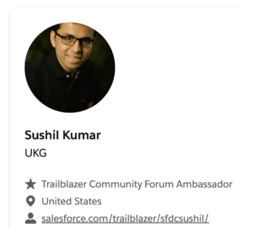
Dreamforce speaker
Spoke at Dreamforce 2025 on topic "Empowering Experts: Unlocking Deeper Community Conversations."
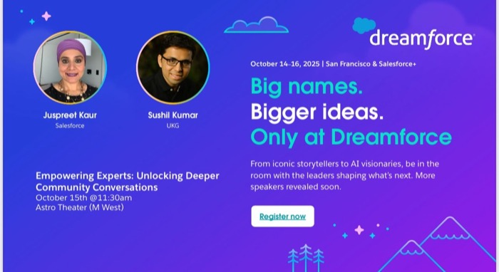
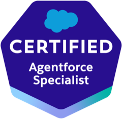
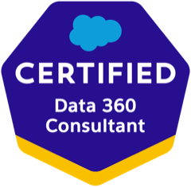
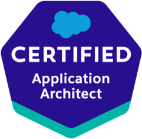
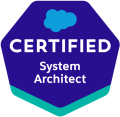
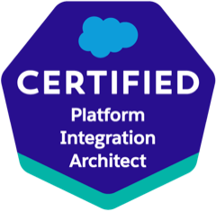
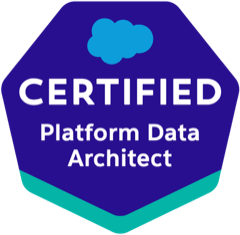
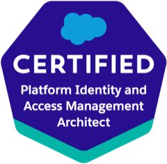
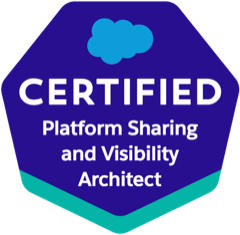
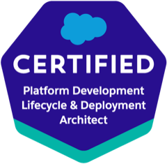
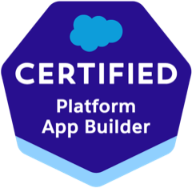
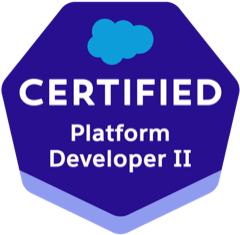
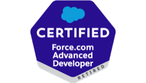
Skills